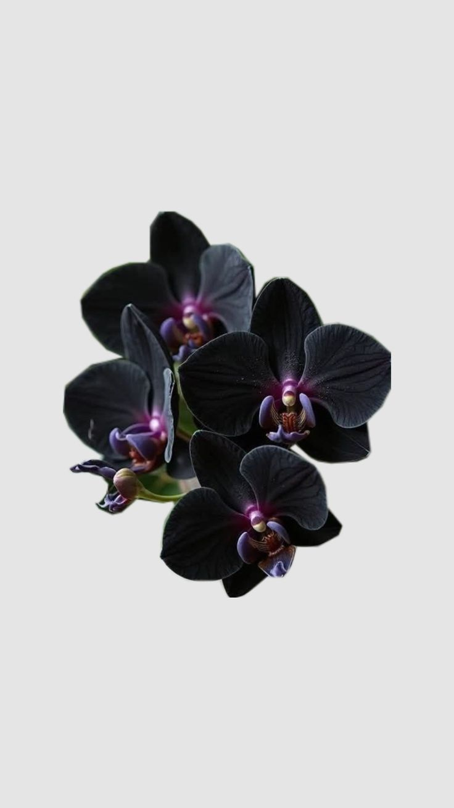

Selamat Datang di Pusat Konservasi
Website ini didedikasikan untuk mendokumentasikan dan melestarikan spesies anggrek langka endemik di hutan Kalimantan yang terancam punah.
Visi & Misi Utama Kami
Melindungi keanekaragaman hayati flora Indonesia, khususnya famili Orchidaceae, dari aktivitas pembalakan liar.
